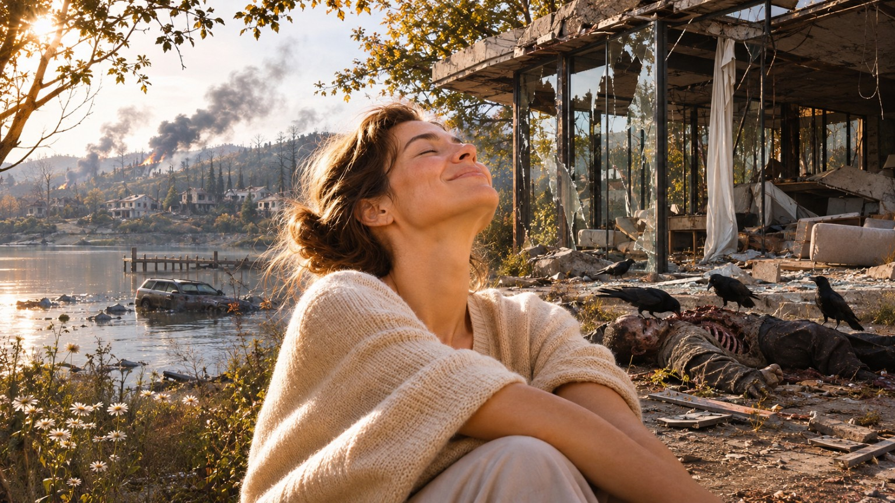

Everything is
going to be okay.
Even when it isn't.
When the world won't stop giving you reasons to worry.
Some problems cannot be solved. Your need to solve them can.
Persistent Resolution-Seeking Disorder (PRSD) describes the recurring impulse to seek answers, accountability, correction, or intervention long after a matter could simply be considered finished.
Relief, measured differently.
The circumstances may remain unchanged. Your experience of them doesn't have to.
Reported a greater sense of peace.
Experienced a reduction in ongoing concern.
Demonstrated improvement in underlying circumstances.
Illustrative fictional campaign figures. The numbers describe the premise of RESOLVA, not findings from an actual clinical trial or evidence for any medication.
Every benefit has another side.
RESOLVA may change how you respond to the world around you. Consider the following experiences.
A greater sense of closure
May be accompanied by premature acceptance of unresolved conditions, including circumstances requiring immediate attention.
Less time spent worrying
May reduce recognition of hazards, urgency in emergencies, or motivation to seek assistance.
Fewer difficult conversations
May decrease attempts to challenge errors, request accountability, or pursue corrective action.
Confidence without confirmation
May produce a persistent sense that everything is fine despite contradictory evidence.
The world may never recover.
You already have.
